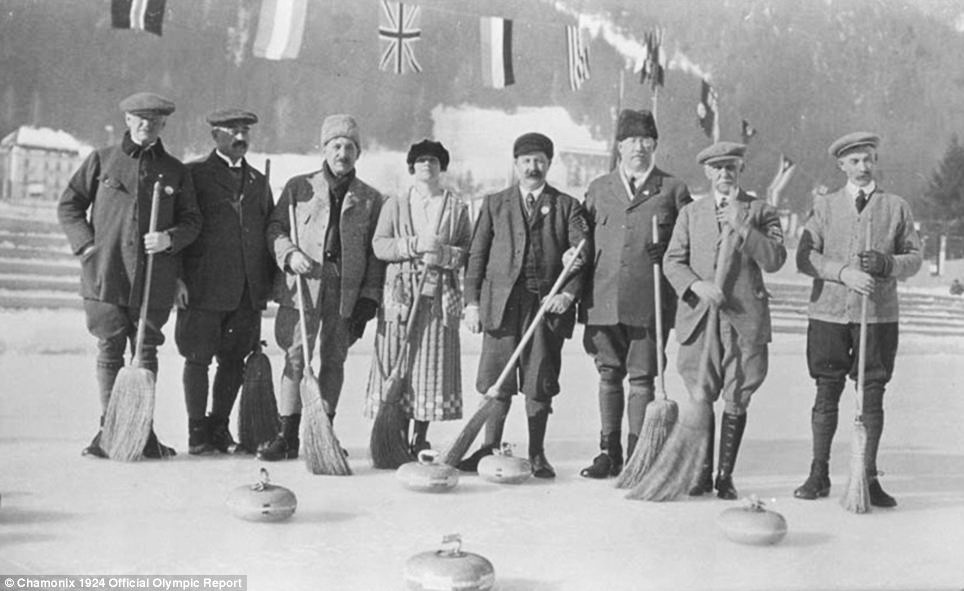
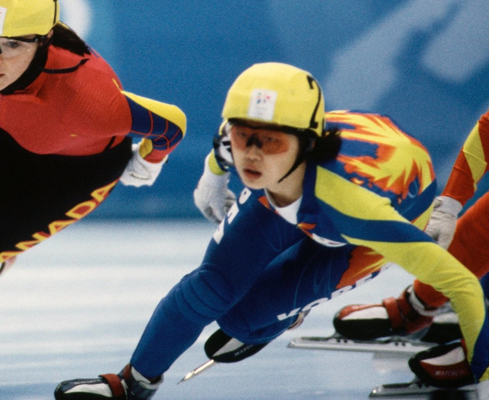
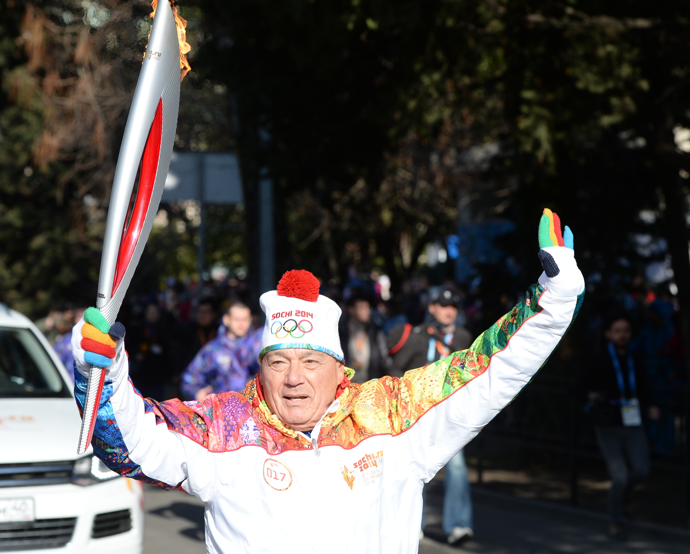

В далёком 1924 году (именно эту дату считают стартом зимних Олимпийских игр) кёрлингист из Швеции Карл Август Кронлунд вошёл в историю как самый возрастной медалист. Ему было 59 лет и 155 дней, когда он завоевал вместе с командой серебро.
Самым молодым медалистом в истории Белой олимпиады стала спортсменка из Южной Кореи Юн Ми Ким. В 1994 году на ОИ в норвежском городе Лиллихаммере шорт-трекистка завоевала олимпийское золото. На тот момент ей было всего 13 лет и 83 дня.
Эстафета Олимпийского огня перед Играми в Сочи побила все рекорды и стала самой протяжённой за всю историю соревнований. Олимпийский огонь преодолел в общей сложности 65 тысяч километров, а около 14 тысяч человек стали почётными факелоносцами. Правда, был зафиксирован ещё один рекорд, которым вряд ли можно гордиться. Впервые в истории огонь во время всей эстафеты погасал более 100 раз...

Хотите узнать о других рекордах?
Биатлон
Бобслей
Кёрлинг
Конькобежный спорт
Лыжный спорт
Санный спорт
Хоккей с шайбой